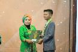
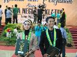
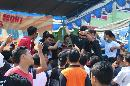
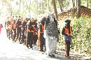
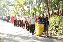

Main Menu
Kepala Sekolah
Kepala Sekolah
Share this article on :CURICULUM VITAE
1. Nama lengkap : Suharja, S.Pd., M.Si.
2. NIP : 132118811/19710611 199412 1 001
3. Tempat dan tanggal lahir : Klaten, 11 Juni 1971
4. Jenis kelamin : Laki-laki
5. Pangkat/Gol.Ruang : Pembina / IV a
6. Jabatan : Guru Pembina
7. Pendidikan : S2 Biosains UNS Surakarta
8. Pekerjaan : Guru Biologi
9. SK Capeg : 01 Desember 1994
10. Unit Kerja : SMA Negeri 3 Klaten
11. Alamat Sekolah : Jl. Mayor Sunaryo No.42 Klaten
12. Alamat Rumah : Ponalan, RT 01/08, Jogosetran Klaten
13. No Hand Phone : 081329039594
Pengalaman sebagai Guru :
1. Narassumber publikasi ilmiah penggunaan multimedia pada model sscs untuk meningkatkan keterampilan proses sains dan jumlah siswa tuntas belajar di kelas XI IPA 6 SMA Negeri 1 Klaten, pada SEMILOKA MGMP Biologi SMA/MA KAB. KLATEN, 10 januari 2015 di sanggar widya krama SMAN 1 KLATEN.
2. Petugas Monev Kurikulum 2013, Direktorat PSMA, Kemendikbud 2014.
3. Narassumber (Instruktur Nasional) Kepala SMA/SMK pada pelatihan Manajemen Implementasi kurikulum 2013 bagi Kepala SMA/SMK kab. Klaten , 11-15 Desember 2014Narassumber,
4. Pembinaan guru pasca EHB tingkat nasional, di Surabaya 11-15 November 2014
5. Petugas Monev Paket C SKB Klaten 16-19 September 2014 Direktorat Pembinaan SMA
6. Narasumber Kurikulum 2013 MGMP Sosiologi, September 2014 .
7. Peserta Pelatihan Instruktur Nasional Kepala Sekolah, yang diselenggarakan LP2KS, 28 April-2 Mei 2014, di Surakarta.
8. Peserta Workshop Tim Pengembang Kurikulum 2013 Kemendikbud, Maret 2014, Yogyakarta
9. Kepala SMA Negeri 1 Prambanan Klaten, 10 Pebruari 2014.
10. Narasumber Kurikulum 2013 di SMA Negeri 1 Karangnongko Klaten, 18 Januari 2014.
11. Workshop Tim Inti Kurikulum 2013 Kemendikbud 2013, Lombok 10-13 Des 2013
12. Narasumber Kurikulum 2013 di SMA Negeri 1 Jogonalan , Klaten.
13. Fasilitator Pembinaan Guru Pasca EHB Kemendikbud 2013 di Sumba Barat dan Rotendao (NTT), dan Luwu Timur Sulawesi Selatan.
14. Tim Pembahas Draf Pembinaan Guru Pasca EHB Kemendikbud 2013, Bandung 30 juli-2 Agustus 2013,
15. Narasumber Kurikulum 2013, Agusutus 2013 di SMA Negeri 1 Cawas
16. Pembahas Draf Juknis Pembelajaran Biologi Kurikulum 13 Kemendikbud tahun 2013, Surakarta, 24-26 Agustus 2013,
17. Narasumber Bedah SKL bagi Guru Biologi di Kabupaten Purwodadi, Rembang, Pati Tahun 2013
18. Rangking I Seleksi Calon Kepala SMA Kabupaten Klaten, Hasil kerja Sama Dinas Pendidikan Kab. Klaten bekerja sama dengan Lembaga Penjaminan Mutu Pendidikan (LPMP) Jawa Tengah, tanggal 25 sd 26 Maret 2013
19. Fasilitator Pembinaan Guru Pasca Evaluasi Hasil Belajar Kemendikbud Jakarta, tahun 2012 di Kalimantan Barat dan Kepulauan Riau
20. Peserta TOT Tim Pembinaan Pasca Evaluasi Hasil Belajar (EHB) Kemendikbud tanggal 24 -26 September 2012, Bandung, Jawa Barat.
21. Peserta Kursus Bahasa Inggris pada Level Intermediate di Speak First Klaten, selama 30 Jam, dengan hasil Amat Baik (A)
22. Peserta Bintek Pemenuhan SNP dari Direktorat Pembinaan SMA Kemendikbud, 10 sd 13 Juli 2012 ( 38 jam) di Surabaya.
23. Peserta Seminar nasional “ Membangun Pola Kemitraan PT dan Sekolah dalam rangka Pengembangan sekolah Berbasis Riset Di UNDIP Semarang, 7 Maret 2012
24. Peserta Kegiatan Fasilitasi Pengembangan KTSP SMA RSBI Provinsi Jawa Tengah 1 sd 4 maret 2012 di LPMP Jateng di Semarang.
25. Piagam Penghargaan Nara Sumber Workshop Pengembangan Kurikulum dan Tata Kelola serta Layanan Pendidikan Siswa CI-BI SMA, Klaten 19 Juli 2011
26. Peserta “International Conference Science Education and teacher Professional Development “ SEAMEO Regional center for Qitep in science, Bali Indonesia 11 – 14 September 2011.
27. Surat keterangan peserta Bintek Pengembangan KTSP RSBI selama 36 jam, 26 sd. 29 September 2011, Cipayung, Bogor, Jabar yang diselenggarakan Kemendiknas, Jakarta
28. Piagam penghargaan Narasumber Workshop Strategi Implementasi dan pengintegrasian pendidikan karakter bangsa dalam pembelajaran, Klaten, 23 Juni 2011
29. Peserta Nasional Pengembangan Jiwa Entrepreneurship Pendidik dalam Pendidikan Karakter, 20 Juni 2011 Universitas Muhammadiyah Surakarta.
30. Certificate English Proficiency Test Overall score 503, LTI Course and test Preparation Center, Jakarta 22 Pebuary 2011
31. Wakil Kepala Sekolah Urusan Akademik (Kurikulum) SMA Negeri 1 Klaten tahun 2010
32. Lulus Serifikasi Guru Bidang Biologi, dan memiliki Sertifikat Pendidik Kemendiknas RI, Surakarta 13 Agustus 2010
33. Peserta Workshop Pengelola RSBI 2 sd 5 Agustus 2010,Kemendiknas, Bogor, Jawa Barat
34. STTPL Pemandu Biologi SMA selama 28 Jam dari Kepala Dinas pendidikan Kabupaten Klaten, 19 Maret 2010
35. Peserta Workshop E-Literacy bagi Tenaga perpustakaan di Sekolah RSBI, 9 sd 11 Maret 2010 di Cipayung, Bogor, Jabar yang diselenggarakan oleh Dirjen Peningkatan Mutu Pendidik dan tenaga kependidikan, Kemendiknas, Jakarta
36. Sertifikat Peserta General English Conversation selama 48 Jam, Lembaga TOEFL Indonesia (LTI) Surakarta, 8 Pebruari 2010
37. Surat Keterangan Peserta Workshop Forum Ilmiah Guru, 7-9 Desember 2009 LPMP Jawa Tengah; 9 Desember 2009
38. Surat keterangan Peserta Pelatihan Tata Kelola FIG dan Pengembangan Profesi Guru dari Forum Ilmiah Guru Provinsi Jawa Tengah, 7 November 2009 LPMP Jawa Tengah
39. STTPL TOT Guru Pemandu Biologi selama 40 jam 3 sd 6 November 2009, LPMP Jateng, Semarang,6 November 2009
40. Narasumber Workshop Pembuatan Media Pembelajaran Berbasis ICT MGMP Biologi Kab. Klaten, 10 Oktober 2009
41. Sertifikat Peserta Bintek Tim Pengembang Kurikulum Kabupaten Klaten 26 sd 30 Agustus 2009 di Klaten; dari Puskur Depdiknas; Jakarta, 01 September 2009
42. Peserta dan Narasumber revitalisasi MGMP Biologi SMA Kabupaten Klaten selama 60 Jam; 22 Agustus 2009
43. Sertifikat sebagai Guru Pembimbing LKTI Pemanfaatan Limbah Industri Kecil dan Rumah Tangga, Fakultas Teknik UNS Surakarta
44. Peserta Pemilihan Guru berprestasi SMA Provinsi Jawa tengah 15 sd 18 Juni 2009 di Semarang; semarang 18 Juni 2009
45. Juara I Guru Berprestasi Kabupaten Klaten, 11 Juni Tahun 2009
46. STTPL TOT Guru Pemandu Biologi selama 40 jam 15 sd 18 Mei 2009, LPMP Jateng, Semarang,18 Mei 2009
47. Sertifikat Peserta Pelatihan Tim Pengembang Kurikulum dari Puskur Depdiknas Jakarta, di Klaten tanggal 24 sd 28 November 2008, Jakarta 2 Pebruari 2009
48. Lulus S2 Biosains dari Program Pasca Sarjana Universitas Sebelas Maret Surakarta, dengan Predikat Cumlaude, 3 Pebruari 2009
49. Certificate Test Of English For International Students from Oxford Course Indonesia : Total Score 483; 5 January 2009
50. Peserta dan Narasumber Workshop pengembangan kurikulum dan Bahan Ajar selama 30 Jam MGMP Biologi Kabupaten Klaten, 17 Januari 2008
51. Guru Pemandu Biologi SMA Kabupaten Klaten tahun 2008 s.d sekarang
52. Penyusun Soal dan Yuri Lomba Mapel Biologi SMA Dinas Pendidikan Provinsi Jawa Tengah, Tahun 2008, dan 2009
53. Surat Keterangan sebagai Peserta Workshop Guru Pemandu Inservice I LPMP Jateng, 11 September 2008
54. Surat Keterangan sebagai Peserta Workshop Guru Pemandu Inservice II LPMP Jateng, 17 November 2008
55. Sertifikat Pendidikan dan Pelatihan Guru Pembina Olimpiade Sains dari PPPPTK Bandung selama 60 Jam dengan hasil Amat Baik, 17 Mei 2008
56. Sertifikat sebagai Narasumber Workshop Revitalisasi MGMP Biologi SMA dari Kepala Dinas Pendidikan dan Kebudayaan Kabupaten Klaten, 24 Desember 2008
57. Surat keterangan sebagai Peserta Forum Ilmiah Guru Tingkat Provinsi Jawa Tengah di LPMP Jateng, 13 November 2008
58. Sertifikat sebagai Narasumber dari Kepala Dinas Pendidikan dan Kebudayaan Kab. Klaten pada Desiminasi Penelitian Tindakan Kelas Forum ilmiah Guru Kabupaten Klaten, 16 Oktober 2008
59. Sertifikat sebagai Narasumber Bintek KTSP kabupaten Klaten dari Kepala Dinas Pendidikan dan Kebudayaan Kabupaten Klaten, 31 Mei 2008
60. Sertifikat Sebagai Pemakalah Seminar Nasional dari Direktur Program Program Pasca Sarjana UNS Surakarta, 24 Mei 2008
61. Surat Keterangan No. 422.a/F/F30/PP/2008 dinyatakan Layak sebagai Guru Pemandu Mapel Biologi SMA dari LPMP Jawa Tengah, 8 Mei 2008
62. Sertifikat Guru Mitra dari Lembaga Penelitian dan Pengabdian Masyarakat UMS, 16 Maret 2008
63. Sertifikat Pengintegrasian ICT dari SMART 360 Malaysia di P4TK Sawangan Depok, Jawa Barat, Januari 2008
64. Piagam Penghargaan Pembina OSN Bidang Biologi Propinsi Jawa Tengah, Mei tahun 2007
65. Sertifikat Pelatihan Bahasa Inggris dari ELTI Yogyakarta September 2007
66. Sertifikat Finalis Lomba Karya Ilmiah Inovatif Pembelajaran Guru Propinsi Jawa Tengah, November 2007
67. Sertifikat Pengembangan Bahan Ajar dan Bahan Ujian Berbasis Teknologi Informasi dan Komunikasi Depdiknas Agustus 2006
68. Nara Sumber dalam Sosialisasi KBK di SMA Negeri 1 Gantiwarno Klaten
69. Sertifikat Internet Application Training Propinsi Jawa Tengah
70. Sertifikat Pelatihan Bahasa Inggris dari lembaga Pendidikan Villa College Yogyakarta, Oktober 2005
71. Surat Tanda Selesai Belajar Ms. Acces dari Gama Informatika Yogyakarta
72. Sertifikat Peserta Forum Ilmiah Guru Propinsi dari LPMP Jawa Tengah, Desember 2005
73. Sertifikat Pelatihan Internet, Linux dan Pembuatan Bahan Ajar dari AMIK ASTER Yogyakarta, Januari 2004
74. Juara III Guru Berprestasi Tingkat Kabupaten Klaten tahun 2004
75. Piagam Penghargaan Lomba Guru Kreatif Jawa Tengah-DIY dari UNIKA Semarang, Agustus 2004
76. Piagam Penghargaan LKT Lingkungan Hidup Depdiknas Jakarta, Agustus 2004
77. Sertifikat sebagai Juri dalam LKTI Popular antar SMU/SMK se Jawa Tengah dan DIY dari Universitas Atmajaya Yogyakarta, Mei 2003
78. Piagam Penghargaan LKT Imtaq dari Depdiknas, Oktober 2003
79. Piagam peserta Standarisasi Tes Prestasi belajar dari Pusat Pengujian Depdiknas selama 300 Jam, dengan hasil Amat Baik, 31 Agustus 2000
Tulisan Ilmiah
1. Guru Biologi di era revolusi IPTEK , Harian Bahari Juni 1998
2. Peningkatan Konsep Biologi Melalui Media Otentik : CAR Di Kelas III G SMP Negeri 16 Tegal (Dana Penelitian Block Grant Bank Dunia Proyek Perluasan Peingkatan Mutu SLTP Jateng , tahun 2000)
3. Membangun etos kerja muslim dalam Pembelajaran Biologi SMU melalui Authentic Assesment .(2003)
4. Keefektifan Metode SQ3R Dalam Pembelajaran Jamur di Kelas 1 SMU Negeri Klaten . (2004)
5. Pemberdayaan masyarakat pesisir untuk menyelamatkan Ekosistem dan Keanekaragaman Hayati Laut Indonesia. (2004)
6. Peningkatan penguasaan Konsep dan keterampilan proses pada pembelajaran Ekosistem melalui Authentic Assesment Kelas XI SMU Negeri 1 Klaten . (2004)
7. Guru masih tetap penting dalam KBK , Harian joglo (2006)
8. Pembelajaran Lingkungan Berbasis Kemampuan siswa Berafiliasi JOYFUL LEARNING untuk Meningkatkan prestasi belajar siswa Kelas 1 SMU Negeri 1 klaten. (2003)
9. Penulis Buku IPA Biologi untuk SMP dan MTs Jilid 1, 2, dan 3 (diedarkan secara nasional) Penerbit Sahabat Jl. Wahidin Sudirohusodo, Klaten (2006)
10. Implementasi Self regulated Learning untuk membuat Pembelajaran Biologi yang lebih produktif dan bermakna di Kelas X I SMU Negeri 1 Klaten (2007)
11. Tim penulis Buku IPA SMP kelas VIII dan IX CV Mitra Media Pustaka , dan telah mendapatkan pengesahan susuai dengan Permendiknas RI No. 80 tahun 2008 tanggal 11 Desember 2008
12. Biomass, Chlorophyll and Nitrogen Content of Leaves of two chili pepper varieties (Capsicum annum) in different fertilization treatments, Nusantara Biocience ; ISEA Journal Of Biological Sciences; Vol 1, No. 1 March 2009, ISSN 2087-3940 (Print); ISSN 2087-3956 (Electronic)
13. Implementation of Self Regulated Learning as Effort to make Biology Learning more productive and meaningfull in Grade X J SMA N 1 Klaten: Makalah dipresentasikan dalam International Conference SEAMEO Regional Center, Bali 11-14 september 2011
14. Implementasi Self regulated Learning untuk membuat Pembelajaran Biologi yang lebih produktif dan bermakna (2011) : Jurnal Vol. II, Nomor 3 Desember 201, LPMP DIY.
Pengalaman Organisasi
1. Ketua Kelompok Ilmiah Jurusan Pendidikan Biologi IKIP Yogyakarta
tahun 1993-1994
2. Sekretaris MGMP IPA Kotamadia Tegal, tahun 1999-2000
3. Sekretaris MGMP Biologi SMA Kab.Klaten, 2004-2007
4. Anggota Tim Pengembang Kurikulum Dinas Pendidikan Kab. Klaten 2008 sd sekarang.
5. Sekretaris Forum Ilmiah Guru Kab.Klaten, 2007 s.d sekarang
6. Ketua MGMP Biologi SMA Kabupaten Klaten 2008 sd. Sekarang
Jajak Pendapat
Pengunguman Terbaru
Statistik Pengunjung
- Dikunjungi oleh : 212246 user
- IP address : 36.71.236.55
- OS : Windows 98
- Browser : Mozilla 4.5
Twitter SMA
Bergabung Dengan Sosial SMA N 3 klaten
Galeri Kegiatan
{kind=link}
{kind=link}

{kind=link}

{kind=link}

{kind=link}

{kind=link}
